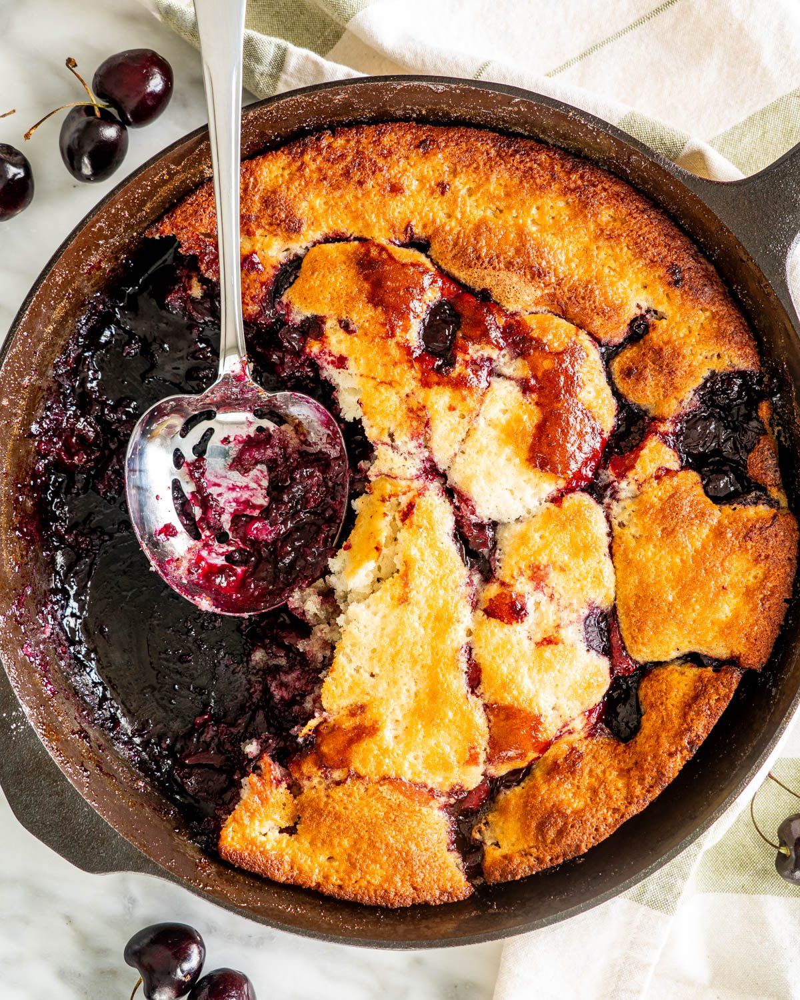

Cherry Cobbler 2

A traditional recipe
This was handed down by my Grandmother. You can use any kind of fruit filling. If using cherry, pie filling can be substituted with 2 cups fresh cherries.
It is said that the cherry cobbler originated in the early British American colonies and came about as a lack of appropriate ingredients and cooking equipment. The English missed their traditional suet puddings and settled for baking cherry cobblers.
ingredients
- butter
- flour
- white sugar
- baking powder
- milk
- cherry pie filling
- Preheat oven to 275 degrees F (135 degrees C). Place butter or margarine in a 9x13 inch baking dish and set on oven rack to melt.
- In a medium bowl, mix together flour, sugar, and baking powder. Stir in milk.
- Remove baking dish from oven as soon as butter or margarine is melted. Pour flour mixture into dish, but DO NOT STIR. Pour fruit evenly into pan, and DO NOT STIR.
- Raise oven temperature to 350 degrees F (175 degrees C). Bake cobbler for 50 to 60 minutes, until golden brown.